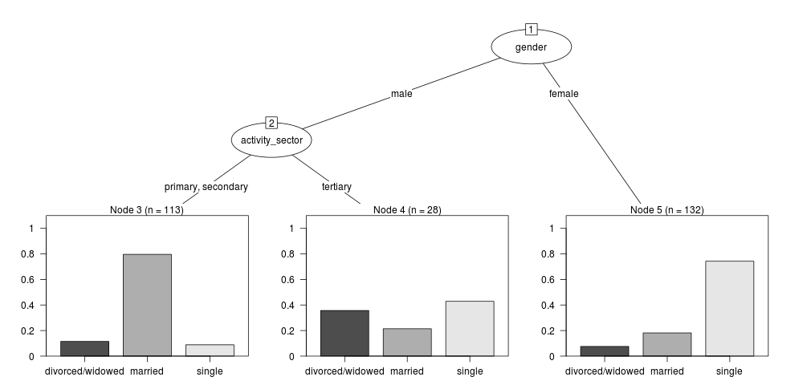

non-linear-model-vs-non-linear-relationship
Table of Contents
- 1 Download
- 2 Introduction
- 3 Test Data
- 4 Data Input - Remote
- 5 Data Input - Local
- 6 Data Operation
- 7 Data Output
- 8 Data Documentation
- 8.1 2013-09-19-transform
- 8.2 R-reml-and-rfigshare
- 8.3 R-reml-and-rfigshare-part-2
- 8.4 dc-uploader-and-ANU-DataCommons
- 8.5 morpho-and-rfigshare
- 8.6 morpho-and-reml-boilerplate-streamline-the-process-of-metadata-entry
- 8.6.1 Background
- 8.6.2 Speed and Rigour
- 8.6.3 Analysts can often trade-off completeness of documentation for speed
- 8.6.4 Librarians produce gold plated documentation and can take longer to produce this
- 8.6.5 An example
- 8.6.6 Embracing Inaccuracy and Incompleteness
- 8.6.7 Aim
- 8.6.8 Step 1: load a simple example dataset
- 8.6.9 Step 2 create a function to deliver the minimal metadata object
- 8.6.10 remlboilerplate-code
- 8.6.11 remlboilerplate-test-code
- 8.6.12 Results: This loads into Morpho with some errors
- 8.6.13 Conclusions
- 8.7 R-get.var.labels
- 8.8 R-spss-variable-labels-read
- 8.9 R-spss-variable-summary-table-code
- 8.10 R-reporttools-variable-summary-table
- 8.11 2014-01-21-morpho-and-reml-use-case-marsupial-mulgara-dasycercus-cristicauda
- 8.12 morphoboundingbox
- 8.13 2014-04-20-using-morpho-for-cataloguing-personal-research-data-blog
- 8.14 2014-04-20-using-morpho-orgmode
- 8.14.1 Introduction
- 8.14.2 Cataloguing Personal Research Data with Morpho
- 8.14.3 How Morpho Works
- 8.14.4 Adding a dataset from my collection
- 8.14.5 the drought dataset:
- 8.14.6 Step One: define the project that I will keep locally
- 8.14.7 Contextual Metadata
- 8.14.8 Abstract
- 8.14.9 Australian FOR codes
- 8.14.10 GCMD Keywords
- 8.14.11 Geographic coverage
- 8.14.12 Save the metadata
- 8.14.13 Additional Metadata
- 8.15 2014-04-20-a-workaround-for-inserting-species-names-to-morpho
- 8.16 2014-04-21-linking-eml-packages-by-umbrella-project-info
- 8.17 2014-04-24-using-reml-to-input-large-number-of-column-descriptions
- 8.18 2014-04-25-tweaking-r-eml-package-outputs-with-morpho-and-failing-that-with-emacs
- 8.19 2014-04-29-using-r-eml-to-input-large-numbers-of-variables-part-2
- 8.20 2014-04-29-workaround-for-installing-morpho-on-a-windows-network
- 8.21 2014-05-02-morpho-has-an-issue-with-zero-length-strings-as-missing-data
- 8.22 advanced EML for data integration
- 8.23 2014-05-09-cwt-lter-data-submission-template-critique
- 8.24 2014-05-17-using-additional-header-rows-for-metadata
- 8.25 2014-04-xx-using-morpho-for-cataloguing-postgis-servers-org
- 8.26 2014-04-24-using-reml-to-input-large-number-of-column-descriptions
- 9 Exploratory Data Analysis
- 10 General Purpose
- 11 Visualisation
- 12 Statistical Modelling
- 13 Bibliograph-ology
- 14 Code Editors
- 15 Workflow Tools
- 16 Graphical User Interfaces
- 17 Version Control
- 18 Latex/Sweave/orgmode/knitr
- 19 R Packages
- 20 Project Management
- 20.1 Gantt Charts
- 20.2 2013-12-02-research-protocol-we-used-for-our-bushfire-project
- 20.3 2013-12-02-research-protocol-for-manitoba-centre-for-health-policy-raw-U-Manitoba Centre for Health Policy Guidelines
- 20.4 2013-12-02-research-protocol-for-manitoba-centre-for-health-policy
- 20.5 2014-02-22-gantting-like-a-hacker
- 20.6 2014-03-29-project-templates-that-initialize-a-new-project-with-a-skeleton-automatically
- 20.7 R-AdminTemplate
- 21 Research Protocols
- 22 Operating Systems
- 23 Linux - Ubuntu
- 24 Big Data Tips
- 25 Writing
1 Download
- Windows Version is Downloadable Here
- Linux and Mac users can just run this R code
require(devtools) install_github("disentangle", "ivanhanigan")
2 Introduction
This project is my collection of notes and customised software tools for data management, manipulation and analysis.
################################################################ # devtools is recommended require(devtools) install_github("disentangle", "ivanhanigan") require(disentangle)
2.1 DESCRIPTION-code
3 Test Data
3.1 Test Data for Classification Trees
#### A fictitious sample dataset For discussion, I'll use a fictional example dataset that I'm using to work through some statistical theory related to Classification and Regression Trees (CART). In the motivating example use case we are interested in predicting the civil status (married, single, divorced/widowed) of individuals from their sex (male, female) and sector of activity (primary, secondary, tertiary). The data set is composed of 273 cases. The data (and related statistical theory) come from: - Ritschard, G. (2006). Computing and using the deviance with classification trees. In Compstat 2006 - Proceedings in Computational Statistics 17th Symposium Held in Rome, Italy, 2006. Retrieved from [This Link](http://mephisto.unige.ch/pub/publications/gr/ritschard_compstat06.pdf) - Ritschard, G., Pisetta, V., & Zighed, D. (2008). Inducing and evaluating classification trees with statistical implicative criteria. Statistical Implicative Analysis. Studies in Computational Intelligence Volume 127, pp 397-419. Retrieved from [This Link](http://mephisto.unige.ch/pub/publications/gr/ritsch-pisetta-zighed_bookGras_rev.pdf) #### Code: # copy and paste the data from the PDF (Table 1 in both papers) civst_gend_sector <- read.csv(textConnection( "civil_status gender activity_sector number_of_cases married male primary 50 married male secondary 40 married male tertiary 6 married female primary 0 married female secondary 14 married female tertiary 10 single male primary 5 single male secondary 5 single male tertiary 12 single female primary 50 single female secondary 30 single female tertiary 18 divorced/widowed male primary 5 divorced/widowed male secondary 8 divorced/widowed male tertiary 10 divorced/widowed female primary 6 divorced/widowed female secondary 2 divorced/widowed female tertiary 2 "),sep = "") # save this to my personal R utilities package "disentangle" # for use later when I am exploring functions dir.create("inst/extdata", recursive=T) write.csv(civst_gend_sector, "inst/extdata/civst_gend_sector.csv", row.names = F) <p></p> That is fine and good, we can use the case weights option to include number of cases but sometimes we want to use one row per person. In the next chunk of code I;ll reformat the data, and also add another fictitious variable called income and contrive an example where a certain group earns less based on their activity sector. #### Code: df <- as.data.frame(matrix(NA, nrow = 0, ncol = 3)) for(i in 1:nrow(civst_gend_sector)) { # i <- 1 n <- civst_gend_sector$number_of_cases[i] if(n == 0) next for(j in 1:n) { df <- rbind(df, civst_gend_sector[i,1:3]) } } df$income <- rnorm(nrow(df), 1000,200) # Let us say secondary men earn less df$income[df$gender == "male" & df$activity == "secondary"] <- df$income[df$gender == "male" & df$activity == "secondary"] - 500 str(df) # save this for use later write.csv(df, "inst/extdata/civst_gend_sector_full.csv", row.names = F) #### Motivating reason for using these data Classification and Regression Tree models (also referred to as Decision Trees) are one of the building blocks of data mining and a great tool for Exploratory Data Analysis. I've mostly used Regression Trees in the past but recently got some work with social science data where Classification Trees were needed. I wanted to assess the deviance as well as the misclassification error rate for measuring the descriptive power of the tree. While this is a easy with Regression Trees it became obvious that it was not so easy with Classification Trees. This is because Classification Trees are most often evaluated by means of the error rate. The problem with the error rate is that it is not that helpful for assessing the descriptive capacity of the tree. For example if we look at the reduction in deviance between the Null model and the fitted tree we can say that the tree explains about XYZ% of the variation. We can also test if this is a statistically significant reduction based on a chi-squared test. Consider this example from page 310 of Hastie, T., Tibshirani, R., & Friedman, J. (2001). The elements of statistical learning. 2nd Edition: - in a two-class problem with 400 observations in each class (denote this by (400, 400)) - suppose one split created nodes (300, 100) and (100, 300), - the other created nodes (200, 400) and (200, 0). - Both splits produce a misclassification rate of 0.25, but the second split produces a pure node and is probably preferable. During the course of my research to try to identify the best available method to implement in my analysis I found a useful series of papers by Ritschard, with a worked example using SPSS. I hope to translate that to R in the future, but the first thing I did was grab the example data used in several of those papers out of the PDF. So seeing as this was a public dataset (I use a lot of restricted data) and because I want to be able to use it to demonstrate the use of any R functions I find or write... I thought would publish it properly. #### The Tree Model So just before we leave Ritschard and the CART method, let's just fit the model. Let's also install my R utilities package "disentangle", to test that we can access the data from it. In this analysis the civil status is the outcome (or response or decision or dependent) variable, while sex and activity sector are the predictors (or condition or independent variables). #### Code: # func require(rpart) require(partykit) require(devtools) install_github("disentangle", "ivanhanigan") # load fpath <- system.file(file.path("extdata", "civst_gend_sector.csv"), package = "disentangle" ) civst_gend_sector <- read.csv(fpath) # clean str(civst_gend_sector) # do fit <- rpart(civil_status ~ gender + activity_sector, data = civst_gend_sector, weights = number_of_cases, control=rpart.control(minsplit=1)) # NB need minsplit to be adjusted for weights. summary(fit) # report dir.create("images") png("images/fit1.png", 1000, 480) plot(as.party(fit)) dev.off() #### The Result
4 Data Input - Remote
4.1 Database Connection
4.1.1 TODO connect2postgres
4.1.2 TODO connect2oracle
4.1.3 TODO libre office base to postgres
install base with software centre and sudo apt-get install libreoffice-sdbc-postgresql http://dcparris.net/2012/07/06/connecting-libreoffice-to-postgresql-natively/ localhost didnt work but 127.0.0.1 did
4.1.4 kexi
using software centre kexi and kexi-postgresql-driver
4.1.5 2014-05-10-ms-access-to-postgresql-in-64-bit-windows
4.2 Database Input
4.2.1 TODO readOGR2
4.2.2 PSQL dump and restore
# name:psql-dump-restore "C:\Program Files\pgAdmin III\1.8\pg_dump.exe" -h ip_address -p 5432 -U user_name -F t -v -i -f "z:pathtobackup_file.backup" -t \"public\".\"table\" databaseName # Or for an entire schema "C:\Program Files\pgAdmin III\1.8\pg_dump.exe" -h ip_address -p 5432 -U user_name -F t -v -i -f "z:\path\to\backup_file.backup" -n \"public\" databaseName #You can dump and restore in a single line directly to your local postgres server pg_dump -h ip_address -U username -i -t schema.table weather | psql -h localhost postgis #You can dump and restore in a single line between databases "C:\Program Files\PostgreSQL\8.3\bin\pg_dump" -h ip_address -U username -i -t schema.table database | "C:\Program Files\PostgreSQL\8.3\bin\psql" -h ipaddress -U username database #To copy to a CSV file "C:\Program Files\PostgreSQL\8.3\bin\psql" -h ip_address -d weather -U username -c "COPY \"schema\".\"table\" TO STDOUT WITH CSV HEADER;" > "J:\workdir\filename.csv" "C:\Program Files\PostgreSQL\8.3\bin\psql" -h ip_address -d weather -U username -c "COPY (select * from schema.table where var = X) TO STDOUT WITH CSV HEADEsR;" > "J:\workdir\filename.csv"
5 Data Input - Local
5.1 Download File from HTTPS
5.1.1 download-file-https-code
# use method = curl download.file('https://alliance.anu.edu.au/access/content/group/4e0f55f1-b540-456a-000a-24730b59fccb/R%20Resources/Intro%20to%20R/timedata.csv', '~/timedata.csv', method ='curl' ) timedata <- read.csv('~/timedata.csv')
5.2 R-xls-read-all-worksheets-code
6 Data Operation
6.1 R-subset
#### R-subset # Filter rows by criteria subset(airquality, Temp > 90, select = c(Ozone, Temp)) ## NB This is a convenience function intended for use interactively. For ## programming it is better to use the standard subsetting functions like ## ‘[’, and in particular the non-standard evaluation of argument ## ‘subset’ can have unanticipated consequences. with(airquality, airquality[Temp > 90, c("Ozone", "Temp")] ) # OR airquality[airquality$Temp > 90, c("Ozone", "Temp")]
6.2 R-transform
#### R-transform # New columns that are functions of other columns df <- transform(airquality, new = -Ozone, Temp2 = (Temp-32)/1.8 ) head(df)
6.3 R-mutate
#### R-mutate require(plyr) # same thing as transform df <- mutate(airquality, new = -Ozone, Temp = (Temp - 32) / 1.8) # Things transform can't do df <- mutate(airquality, Temp = (Temp - 32) / 1.8, OzT = Ozone / Temp) # mutate is rather faster than transform system.time(transform(baseball, avg_ab = ab / g)) system.time(mutate(baseball, avg_ab = ab / g))
6.4 R-summarise
#### R-summarise # New data.frame where columns are functions of existing columns require(plyr) df <- ddply(.data = airquality, .variables = "Month", .fun = summarise, tmax = max(Temp), tav = mean(Temp), ndays = length(unique(Day)) ) head(df) #### Passing variables to ddply for summary # Notice how the name of the variable Temp doesn't need quotes? # this means that you need to hard code the names # But if you want to pass variables to this inside a function we need a # different approach. summarise_df <- function(x, by, var1, var2, var3) { data_out <- ddply(x, by, function(df) return( c( tmax = max(df[,var1]), tav = mean(df[,var2]), ndays = length(unique(df[,var3])) ) ) ) return(data_out) } df2 <- summarise_df(x = airquality, by = "Month", var1 = "Temp", var2 = "Temp", var3 = "Day" ) head(df2) all.equal(df,df2) # TRUE #### Another alternative, if we want to pass the dataset as string too summarise_df2 <- function(x, by, var1, var2, var3) { data_out <- eval( parse( text = sprintf( "ddply(.data = %s, .variables = '%s', .fun = summarise, tmax = max(%s), tav = mean(%s), ndays = length(unique(%s)) )", x, by, var1, var2, var3 ) ) ) return(data_out) } df3 <- summarise_df2(x = "airquality", by = "Month", var1 = "Temp", var2 = "Temp", var3 = "Day" ) head(df3) all.equal(df, df3) # TRUE
6.5 R-arrange
#### R-arrange # Re-order the rows of a data.frame df <- arrange(airquality, Temp, Ozone) head(df)
6.6 R-upcasestring
6.6.1 R-upcasestring
6.6.2 test-upcasestring
6.6.3 man-upcasestring
6.6.4 blog
6.7 R-levenshtein
6.7.1 R-levenshtein
6.7.2 test-levenshtein
6.7.3 test-stringdist-code
6.7.4 man-levenshtein
6.8 2014-02-27-yearmon-class-and-interoperability-with-excel-and-access
6.9 TODO working-with-dates
6.10 R-spatial
6.10.1 TODO xy2shp
6.11 TODO reshape
6.11.1 TODO base:reshape
#### name:reshape#### rshaped<-reshape(selected2,direction="long",idvar="Date",ids=row.names(selected2), timevar="pharmacy",times=names(selected2)[5:ncol(selected2)], varying=list(names(selected2)[5:ncol(selected2)]),v.names="sales") rshaped<-reshape(data,direction="long",varying=list(c( "a1_salm_cnt", "a2_salm_cnt", "a3_a5_salm_cnt"),c( "a1_pop", "a2_pop","a3_a5_pop" )),v.names=c("counts","pops"),timevar="agegroup",times=c("a1","a2","a3")) selectedSLAERP<-reshape(selectedSLA, times=names(selectedSLA)[3:ncol(selectedSLA)],timevar="agesex",varying=list(names(selectedSLA)[3:ncol(selectedSLA)]),v.name=paste(i),direction="long") reshape(test,direction="long",varying=list(names(test)[2:ncol(test)]),times=names(test)[2:ncol(test)]) # all you need is varying (list of col names) and times (not a list), timevar and v.name are useful reshape(Commands[,c(1,5)],direction="wide",v.names="codes",idvar="disease",timevar="codes") #when d2= ## station Time TemperatureC DewpointC PressurehPa WindDirection WindDirectionDegrees WindSpeedKMH ## 1 INSWGUND1 1/01/2009 0:01 13.8 3.6 1005.3 NW 308 3.2 ## 2 INSWGUND1 1/01/2009 0:30 14.5 3.6 1005.3 NW 308 1.6 ## 3 INSWGUND1 1/01/2009 1:00 14.2 3.7 1005.0 NW 308 3.2 ## 4 INSWGUND1 1/01/2009 1:30 14.3 3.8 1004.6 NW 306 8.0 ## 5 INSWGUND1 1/01/2009 2:00 13.8 3.9 1004.6 NW 315 8.0 ## 6 INSWGUND1 1/01/2009 2:30 13.5 3.8 1004.3 NW 321 8.0 reshape(d,direction="wide",idvar="Time",timevar="station")
6.11.2 TODO reshape Packages
Reshape Package in R: Long Data format, to Wide, back to Long again May 16, 2011 Hayward Godwin Leave a comment Go to comments
In this post, I describe how to use the reshape package to modify a dataframe from a long data format, to a wide format, and then back to a long format again. It’ll be an epic journey; some of us may not survive (especially me!). Wide versus Long Data Formats
I’ll begin by describing what is meant by ‘wide’ versus ‘long’ data formats. Long data look like this:
As you can see, there is one row for each value that you have. Many statistical tests in R need data in this shape (e.g., ANOVAs and the like). This is the case even when running tests with repeated factors.
In the example above, lets say that iv1 is a between-subjects factor and iv2 is a within-subjects factor. The same table, in a wide format, would look like this:
Here, each column represents a unique pairing of the various factors. SPSS favours this method for repeated-measures tests (such as repeated-measures ANOVAs or paired t-tests), and being able to move between the two formats is helpful when multiple people are working on a single dataset but using different packages (e.g., R vs SPSS). Get in Shape! The Reshape Package
I’ll begin by going back to a dataset that I’ve been messing around with for some time. I’m going to select out the columns I need, and rename one of them. One of them ended up getting called “X.” because of the way the data were tabbed. Here, I rename the “X.” column into “rank”, which is what it really should have been in the first place.
1 fulllistcutdown = data.frame("rank"=fulllistdps$X., "class"=fulllistdps$class, 2 "spec"=fulllistdps$spec, "dps"=fulllistdps$DPS)
The data look like this:
Rows truncated to prevent from filling entire page
Let’s begin by converting these data into a wide format. To do that, all we need to do is use the cast function. This has the general format of: 1 cast(dataset, factor1 ~ factor2 ~ etc., value=value column, fun=aggregation method)
Here, dataset refers to your target dataset. factor1 ~ factor2 ~ etc lists the columns/factors that you want to split up the data by. value deals with the column that you want to select and calculate a value for. You can run all sorts of aggregation functions using the fun= command. The default is len, the count of the number of cells for that combination of factor levels. To make my dataset into a wide format, all I need to run is: 1
Here, I create a wide dataframe based on the rank and class columns. The computed value is the mean of the dps column. It looks like this:
There and Back Again: Getting from Wide to Long Format
Say that we want to go back to the long format again (or, indeed, convert from wide to long in the first place!). How can we do that? We use the melt function! 1 melt(wideframe, id=c("rank"))
This takes us right back to the start, where our exciting journey began.
6.11.3 TODO reshapes
Also consider reshape2 by same author as reshape.
He mentions it may be 'considerably faster and more memory efficient' http://r.789695.n4.nabble.com/R-pkgs-reshape2-a-reboot-of-the-reshape-package-td2534378.html
#### name:reshapes#### # tools require(reshape2) sort_df<-function (data, vars = names(data), decreasing=F) { if (length(vars) == 0 || is.null(vars)) return(data) data[do.call("order", c(data[, vars, drop = FALSE], decreasing = decreasing)), , drop = FALSE] } # load d<-as.data.frame(rbind( c(1,1970,3,3,8,12,23,20,26,25,25,16,8,4), c(2,1970,5,4,10,13,26,20,27,28,27,18,9,5) )) d$climate <- 'frst' names(d)<-c('ID','Year','1','2','3','4','5','6','7','8','9','10','11','12','climate') str(d) # do d2 <- melt(d,id=c('ID','Year', 'climate')) str(d2) d2$variable <- as.numeric(as.character(d2$variable) ) sort_df(d2) #OR # load t<-"ID,Year,Jan,Feb,Mar,Apr,May,Jun,Jul,Aug,Sep,Oct,Nov,Dec,climate 1,1970,3,3,8,12,23,20,26,25,25,16,8,4,frst 2,1970,5,4,10,13,26,20,27,28,27,18,9,5,frst " t<-read.csv(textConnection(t)) library(reshape) #convert wide form to long form t2<-melt(t,id.var=c("ID","climate","Year")) names(t2)<-c("ID","Surf","Year","Month","Value") #turn named months into indices t2$Month<-match(t2$Month,month.abb)
6.11.4 TODO reshape more
seasonalCountsPMmeans <- data.frame(cast(qc2, adjustedyear ~ season, value=c('pm10_av'), fun=mean, na.rm=T))
6.12 TODO catenate columns
#### name:catenate#### dat <- data.frame(a = c("what is", "it is hard"), b = c("going on with", "to know what to"), c = c("this data file?", "make of it all!"), stringsAsFactors = FALSE) dat$b v <- unlist(unname(dat[1,])) paste(v)[1] paste(v, sep="", collapse = "")[1] paste(v, sep="", collapse = " ")[1] apply(dat, 1, function(x) paste(x, sep='', collapse=' '))
6.13 TODO fill ragged matrix
#### name:fill#### person fruit suburb something 1 Tom oranges Scullin 3.0 2 apples 6.0 3 pears 9.0 4 tim tams 2.0 5 Gertrude durian Charnwood 3.7 6 dragon fruit 7.0 7 lychees 4.9 8 pineapple 100.9 9 apples 98.0 10 Pennelope cashews Higgins 2.0 11 beer nuts 5.6 12 Pringles 4.0 fill.col <- function(x, col.name) { s <- which(!x[[col.name]] == "") item <- x[[col.name]][s] hold <- vector('list', length(item)) for(i in 1: length(hold)) hold[[i]] <- rep(item[i], ifelse(is.na(s[i+1]), dim(x)[1] + 1, s[i+1]) - s[i]) x[[col.name]] <- unlist(hold) x } d <- fill.col(d, 'person') fill.col(d, 'suburb') person fruit suburb something 1 Tom oranges Scullin 3.0 2 Tom apples Scullin 6.0 3 Tom pears Scullin 9.0 4 Tom tim tams Scullin 2.0 5 Gertrude durian Charnwood 3.7 6 Gertrude dragon fruit Charnwood 7.0 7 Gertrude lychees Charnwood 4.9 8 Gertrude pineapple Charnwood 100.9 9 Gertrude apples Charnwood 98.0 10 Pennelope cashews Higgins 2.0 11 Pennelope beer nuts Higgins 5.6 12 Pennelope Pringles Higgins 4.0
7 Data Output
8 Data Documentation
8.1 2013-09-19-transform
8.2 R-reml-and-rfigshare
--- name: data-documentation-case-study-reml-and-rfigshare layout: post title: data-documentation-case-study-reml-and-rfigshare date: 2013-10-12 categories: - Data Documentation --- #### Case Study: reml-and-rfigshare First we will look at the work of the ROpenSci team and the reml package. In the vignette they show how to publish data to figshare using rfigshare package. [figshare](http://figshare.com/) is a site where scientists can share datasets/figures/code. The goals are to encourage researchers to share negative results and make reproducible research efforts user-friendly. It also uses a tagging system for scientific research discovery. They give you unlimited public space and 1GB of private space. Start by getting the reml package. #### Code: # func require(devtools) install_github("reml", "ropensci") require(reml) ?eml_write <p></p> This is the Top-level API function for writing eml. Help page is a bit sparse. See [This Link](https://github.com/ropensci/reml) for more. For eg "for convenience, dat could simply be a data.frame and reml will launch it's metadata wizard to assist in constructing the metadata based on the data.frame provided. While this may be helpful starting out, regular users will find it faster to define the columns and units directly in the format above." Now load up the test data for classification trees I described in [This Post](/2013/10/test-data-for-classification-trees/) #### Code: install_github("disentangle", "ivanhanigan") # for the data # described in prev post # load fpath <- system.file(file.path("extdata", "civst_gend_sector.csv"), package = "disentangle" ) civst_gend_sector <- read.csv(fpath) # clean str(civst_gend_sector) # do eml_write(civst_gend_sector, creator = "Ivan Hanigan <ivanhanigan@gmail.com>") # Starts up the wizard, a section is shown below. The wizard # prompts in the console and the user writes the answer. # Enter description for column 'civil_status': # marriage status # column civil_status appears to contain categorical data. # # Categories are divorced/widowed, married, single # Please define each of the categories at the prompt # define 'divorced/widowed': # was once married # define 'married': # still married # define 'single': # never married # TODO I don't really know what activity_sector is. I assumed # school because Categories are primary, secondary, tertiary. # this created "metadata.xml" and "metadata.csv" file.remove(c("metadata.xml","metadata.csv")) <p></p> This was a very minimal data documentation effort. A bit more detail would be better. Because I would now need to re-write all that in the wizard I will take the advice of the help file that "regular users will find it faster to define the columns and units directly in the format" #### Code: ds <- data.set(civst_gend_sector, col.defs = c("Marriage status", "sex", "education", "counts"), unit.defs = list(c("was once married","still married","never married"), c("women", "men"), c("primary school","secondary school","tertiary school"), c("persons")) ) ds # this prints the dataset and the metadata # now run the EML function eml_write(ds, title = "civst_gend_sector", description = "An example, fictional dataset for Decision Tree Models", creator = "Ivan Hanigan <ivanhanigan@gmail.com>", file = "inst/extdata/civst_gend_sector_eml.xml" ) # this created the xml and csv with out asking anything # but returned a ## Warning message: ## In `[<-.data.frame`(`*tmp*`, , value = list(civil_status = c(2L, : ## Setting class(x) to NULL; result will no longer be an S4 object # TODO investigate this? # now we can access the local EML obj <- eml_read("inst/extdata/civst_gend_sector_eml.xml") obj str(dataTable(obj)) # returns an error ## Error in plyr::compact(lapply(slotNames(from), function(s) if (!isEmpty(slot(from, (from attribute.R#300) : ## subscript out of bounds <p></p> # Conclusions So this looks like a useful tool. Next steps are to: - look at sending these data to figshare - describe a really really REALLY simple workflow (3 lines? create metadata, eml_write, push to figshare)
8.3 R-reml-and-rfigshare-part-2
--- name: reml-and-rfigshare-part-2 layout: post title: reml-and-rfigshare-part-2 date: 2013-10-12 categories: - Data Documentation --- In the last post I explored the functionality of reml. This time I will try to send data to figshare. - First follow [These Instructions](https://github.com/ropensci/rfigshare) to get rfigshare set up. In particular store your figshare credentials in ~/.Rprofile #### Code:reml-and-rfigshare-part-2 # func require(devtools) install_github("reml", "ropensci") require(reml) install_github("rfigshare", "ropensci") require(rfigshare) install_github("disentangle", "ivanhanigan") require(disentangle) # load fpath <- system.file(file.path("extdata","civst_gend_sector_eml.xml"), package = "disentangle") setwd(dirname(fpath)) obj <- eml_read(fpath) # clean obj # do ## STEP 1: find one of the preset categories # available. We can ask the API for # a list of all the categories: list <- fs_category_list() list[grep("Survey", list)] ## STEP 2: PUBLISH TO FIGSHARE id <- eml_publish(fname, description="Example EML A fictional dataset", categories = "Survey results", tags = "EML", destination="figshare" ) # there are several warnings # but go to figshare and it has sent the metadata and data OK # make public using either the figshare web interface, the # rfigshare package (using fs_make_public(id)) or just by adding # the argument visibility = TRUE to the above eml_publish fs_make_public(id) <p></p> # Now these data are on figshare Now I have published the data they are visible and have a DOI <iframe src="http://wl.figshare.com/articles/820158/embed?show_title=1" width="568" height="157" frameborder="0"></iframe>
8.4 dc-uploader-and-ANU-DataCommons
8.5 morpho-and-rfigshare
8.6 morpho-and-reml-boilerplate-streamline-the-process-of-metadata-entry
8.6.1 Background
- The Morpho/Metacat system is great for a data repository
- Morpho also claims to be suitable for Ecologists to document their data
- But in my experience it leaves a little to be desired in ease of use for both purposes
- Specifically the speed that documentation can be entered into Morpho is slow
- This post is a first attempt to create some boilerplate code to quickly generate EML metadata using REML.
8.6.2 Speed and Rigour
As I noted in a previous post, there are [two types of data documentation workflow](http://ivanhanigan.github.io/2013/10/two-main-types-of-data-documentation-workflow/).
- GUI
- Programatic
I also think there are two types of users with different motivations and constraints:
- 1) Data Analysts
- 2) Data Librarians
8.6.3 Analysts can often trade-off completeness of documentation for speed
In my view the Analysts group of users need a tool that will very rapidly document their data and workflow steps and can live with a bit less rigour in the quality of documentation. Obviously this is not ideal but seems an inevitable trade-off needed to enable analysts to keep up the momentum of the data processing and modelling without getting distracted by tedious (and potentially unnecessary) data documentation tasks.
8.6.4 Librarians produce gold plated documentation and can take longer to produce this
On the other hand the role of the Librarian group is to produce documentation to the best level possible (given time and resource constraints) the datasets and methodologies that lead to the creation of the datasets. For that group Rigour will take precedence and there will be a trade-off in terms of the amount of time needed to produce the documentation.
8.6.5 An example
As an example of the two different groups, an analyst working with weather data in Australia may want to specify that their variable "temperature" is the average of the daily maxima and minima, but might not need to specify that the observations were taken inside a Stevenson Screen, or even if they are in Celsius, Farenhiet or Kelvin. They will be very keen to start the analysis to identify any associations between weather variables and the response variable they are investigating. The data librarian on the other hand will be more likely to need to include this information so that the users of the temperature data do not mis-interpret it.
8.6.6 Embracing Inaccuracy and Incompleteness
- I've been talking about this for a while got referred to this document by Ben Davies at the ANUSF
[http://thedailywtf.com/Articles/Documentation-Done-Right.aspx](http://thedailywtf.com/Articles/Documentation-Done-Right.aspx)
- It has this bit:
Embracing Inaccuracy and Incompleteness
The immediate answer to what’s the right way to do documentation is
clear: produce the least amount of documentation needed to facilitate
the most understanding, and be very explicit about which documentation
is to be maintained and which is to be archived (i.e., read-only and
left to rot).
- Roughly speaking, a full EML document produced by Morpho is a bit like a whole bunch of cruft that isnt needed and gets in the way (and is more confusing)
- Whereas a minimal version Im thinking of covers almost all the generic entries providing the "minimum amount of stuff to make it work right".
8.6.7 Aim
- This experiment aims to speed up the creation of a minimal "skeleton" of metadata to a level that both the groups above can be comfortable with AS A FIRST STEP.
- It is assumed that additional steps will then need to be taken to complete the documentation, but the automation of the first part of the process should shave off enough time to suit the purposes of both groups
- It is an imperative that the quick-start creation of the metadata does not end up costing the documentor more time later on down the track if they need to go back to many of the elements for additional editing.
8.6.8 Step 1: load a simple example dataset
I've been using a [fictitious dataset from a Statistics Methodology paper by Ritschard 2006](http://ivanhanigan.github.io/2013/10/test-data-for-classification-trees/). It will do as a first cut but when it comes to actually test this out it would be good to have something that would take a bit longer (so that the frustrations of using Morpho become very apparent).
#### R Code: # func require(devtools) install_github("disentangle", "ivanhanigan") require(disentangle) # load fpath <- system.file( file.path("extdata", "civst_gend_sector_full.csv"), package = "disentangle" ) data_set <- read.csv(fpath) summary(data_set) # store it in the current project workspace write.csv(data_set, "data/civst_gend_sector_full.csv", row.names = F) ## | divorced/widowed: 33 | female:132 | primary :116 | Min. : 128.9 | ## | married :120 | male :141 | secondary: 99 | 1st Qu.: 768.3 | ## | single :120 | nil | tertiary : 58 | Median : 922.8 | ## | nil | nil | nil | Mean : 908.4 | ## | nil | nil | nil | 3rd Qu.:1079.1 | ## | nil | nil | nil | Max. :1479.4 |
8.6.9 Step 2 create a function to deliver the minimal metadata object
- the package REML will create a EML metadata document quite easily
- I will assume that a lot of the data elements are self explanatory and take column names and factor levels as the descriptions
8.6.10 remlboilerplate-code
################################################################ # name:reml_boilerplate # func ## if(!require(EML)) { ## require(devtools) ## install_github("EML", "ropensci") ## } ## require(EML) reml_boilerplate <- function(data_set, created_by = "Ivan Hanigan <ivanhanigan@gmail.com>", data_dir = getwd(), titl = NA, desc = "") { # essential if(is.na(titl)) stop(print("must specify title")) # we can get the col names easily col_defs <- names(data_set) # next create a list from the data unit_defs <- list() for(i in 1:ncol(data_set)) { # i = 4 if(is.numeric(data_set[,i])){ unit_defs[[i]] <- "number" } else { unit_defs[[i]] <- names(table(data_set[,i])) } } # unit_defs ds <- data.set(data_set, col.defs = col_defs, unit.defs = unit_defs ) # str(ds) # metadata <- ds #metadata(ds) # needs names ## for(i in 1:ncol(data_set)) ## { ## # i = 4 ## if(is.numeric(data_set[,i])){ ## names(metadata[[i]][[3]]) <- "number" ## } else { ## names(metadata[[i]][[3]]) <- metadata[[i]][[3]] ## } ## } # metadata eml_config(creator=created_by) oldwd <- getwd() setwd(data_dir) # ## > eml_write(dat=ds, file = paste(titl, "xml", sep = "."), title = titl) ## Error in is(dat, "data.set") : object 'dat' not found ## > traceback() ## 7: is(dat, "data.set") at dataTable_methods.R#14 ## 6: eml_dataTable(dat = dat, title = title) ## 5: initialize(value, ...) ## 4: initialize(value, ...) ## 3: new("dataset", title = title, creator = who$creator, contact = who$contact, ## coverage = coverage, methods = methods, dataTable = c(eml_dataTable(dat = dat, ## title = title)), ...) at eml_methods.R#61 ## 2: eml(dat = dat, title = title, creator = creator, contact = contact, ## ...) at eml_write.R#27 ## 1: eml_write(dat = ds, file = paste(titl, "xml", sep = "."), title = titl) dat <- ds eml_write(dat, file = paste(titl, "xml", sep = "."), title = titl) setwd(oldwd) sprintf("your metadata has been created in the '%s' directory", data_dir) }
8.6.11 remlboilerplate-test-code
################################################################ # name:reml_boilerplate-test analyte <- read.csv("data/civst_gend_sector_full.csv") reml_boilerplate( data_set = analyte, created_by = "Ivan Hanigan <ivanhanigan@gmail.com>", data_dir = "data", titl = "civst_gend_sector_full", desc = "An example, fictional dataset" ) dir("data")
8.6.12 Results: This loads into Morpho with some errors
- Notably unable to import the data file

- Also "the saved document is not valid for some reason"

8.6.13 Conclusions
- This needs testing
- A failure would be that even if it is quicker to get started if it takes a long time and is difficult to fix up it might increase the risk of misunderstandings.
8.7 R-get.var.labels
8.7.1 test-get.var.labels
################################################################ # name:R-variable-labels-create # func require(devtools) install_github("disentangle", "ivanhanigan") require(disentangle) require(Hmisc) # load fpath <- system.file(file.path("extdata", "civst_gend_sector.csv"), package = "disentangle" ) civst_gend_sector <- read.csv(fpath) # clean str(civst_gend_sector) # do label(civst_gend_sector) <- "Fictional data for Classification Trees" label(civst_gend_sector$civil_status) <- "married" label(civst_gend_sector$gender) <- "sex of person" label(civst_gend_sector$activity_sector) <- "level of school" label(civst_gend_sector$number_of_cases) <- "persons" attributes(civst_gend_sector)$variable.labels <- get.var.labels(civst_gend_sector) # report str(civst_gend_sector) as.data.frame( attributes(civst_gend_sector)$variable.labels )
8.8 R-spss-variable-labels-read
8.8.1 R-spss-variable-labels-read
################################################################ # name:R-spss-variable-labels-read spss_variable_labels_read <- function(x, filter, case_sensitive = FALSE, return_df = FALSE) { if(case_sensitive) { col_index <- grep(filter, attributes(x)$variable.labels) } else { col_index <- grep(tolower(filter), tolower(attributes(x)$variable.labels)) } names_returned <- attributes(x)$variable.labels[col_index] col_names <- names(names_returned) col_refs <- as.data.frame(cbind(col_names, names_returned)) col_refs[,1] <- as.character(col_refs[,1]) col_refs[,2] <- as.character(col_refs[,2]) row.names(col_refs) <- NULL if(return_df) { names_returned <- paste(names_returned, sep = "", collapse = "', '") cat(sprintf("returning the columns '%s'", names_returned)) data_out <- x[,col_index] return(data_out) } else { return(col_refs) } }
8.8.2 test-spss-variable-labels-read-code
################################################################ # name:test-spss_variable_labels_read require(disentangle) fpath <- system.file("extdata/civst_gend_sector.csv",package = "disentangle") fpath civst_gend_sector <- read.csv(fpath) str(civst_gend_sector) # test qc <- spss_variable_labels_read( x = civst_gend_sector , filter = "number_of_cases" , case_sensitive = TRUE , return_df = T ) str(qc) qc
8.9 R-spss-variable-summary-table-code
################################################################ # name:R-summary-table # now summarise in a tex table # func require(xtable) # load analyte <- read.spss(filename, to.data.frame=T) # clean names(analyte) varslist <- as.data.frame(attributes(analyte)$variable.labels) write.csv(varslist, "variable_labels.csv", row.names = T) x <- read.csv('variable_labels.csv') head(x) names(x) <- c("variable", "label") # do x.big <- xtable(x,label='tab:table1',caption='Variable Names and Descriptions') align(x.big) <- c( 'l', 'p{1in}', 'p{4in}') sink('tab1.tex') print(x.big,tabular.environment='longtable', floating=FALSE, caption.placement = "top", hline.after = c(-1,nrow(x.big)), add.to.row = list(pos = list(0),command = "\\hline \\endhead "), include.rownames=F) sink()
8.10 R-reporttools-variable-summary-table
################################################################ # func if(!require(reporttools)) install.packages("reporttools"); require(reporttools) require(devtools) install_github("disentangle", "ivanhanigan") require(disentangle) # load fpath <- system.file(file.path("extdata", "civst_gend_sector_full.csv"), package = "disentangle") analyte <- read.csv(fpath) analyte$random <- rnorm(nrow(analyte), 0 , 1) summary(analyte) # create a large number of randome variables for(i in 1:75) { analyte[,ncol(analyte) + 1] <- rnorm(nrow(analyte), 10 , 20) } names(analyte) str(analyte) data_continuous <- numeric(0) for(i in 1:length(names(analyte))) { if(is.numeric(analyte[,i])) { data_continuous <- c(data_continuous, i) } } # clean str(analyte[,data_continuous]) str(analyte[,-data_continuous]) # do sink('inst/doc/tabContinuous.tex') tableContinuous(vars = analyte[,data_continuous], stats = c("n", "min", "mean", "median", "max", "iqr", "na"), cap = "Table of continuous variables.", lab = "tab:table4", caption.placement = "top", longtable = TRUE, add.to.row = list(pos = list(0), command = "\\hline \\endhead ")) sink() x.big <- analyte[,-data_continuous] sink('inst/doc/tabNominal.tex') tableNominal(vars = x.big, cap = "Table of nominal variables", vertical = FALSE, lab = "tab:table5", longtable = TRUE, caption.placement = "top") sink()
8.11 2014-01-21-morpho-and-reml-use-case-marsupial-mulgara-dasycercus-cristicauda
8.12 morphoboundingbox
8.12.1 R-morphoboundingbox
8.12.2 test-morphoboundingbox
8.12.3 man-boundingbox
8.13 2014-04-20-using-morpho-for-cataloguing-personal-research-data-blog
8.14 2014-04-20-using-morpho-orgmode
8.14.1 Introduction
The collection of scientific data is undertaken at an individual level by everybody in their own way. The layout of data collections that I have seen is incredibly varied; spread across multiple files and folders which can be difficult to navigate or search through. In some cases these collections are incomprehensible to all but the individual themselves. Given that a lot of projects are collaborative in nature and require extensive sharing, it is important that scientists maintain their data collection by some form of system that allows easy data extraction and use in other projects. Therefore, the maintenance of a personal catalogue of datasets is an important activity for scientists.
By cataloguing I mean that a file or database is kept that stores all the information about the names of the datasets (and any other files the data may be spread across), where the datasets are located, any references (papers) that were developed from it and finally important information regarding the conditions it was formed under.
While this may seem laborious, it keeps track of all the data that one has collected over time and gives one a reference system to find a dataset of interest when sharing with collaborators. Datasets can be saved in any filing system the scientist chooses, but with the help of their personal data catalogue they will always know the status of their data collection.
8.14.2 Cataloguing Personal Research Data with Morpho
[Metacat](https://knb.ecoinformatics.org/knb/docs/intro.html) is an online repository for data and metadata. It is a great resource for the publication of data, but not very useful for an individual scientist to use on their personal computer. However [Morpho](https://knb.ecoinformatics.org/#tools/morpho) the Metadata Editor used by Metacat may be used locally by a researcher to catalogue their collection (and ultimately this will make publishing elements of the collection easier.) Morpho uses the Ecological Metadata Language (EML) to author metadata with a graphical user interface wizard.
I am using morpho 1.8 due to my group using older metacat server.
8.14.3 How Morpho Works
When you install Morpho it creates a directory where you can run the program from, and another hidden directory called ".morpho" for it's database of all your metadata (and optionally any data you import to it). Below is an image of mine, with a couple of test records I played around with (the XMLs/HTMLs) and a dataset I imported (the text file).
- ~/.morpho/profiles/hanigan/data/hanigan/

Every time a modification is made to the metadata a new XML is saved here, with the major number being the ID of the package and incremented minor number to reflect the change.
The GUI is tedious.
8.14.4 Adding a dataset from my collection
I have already got a good amount of metadata I generated when I published [the drought data](http://dx.doi.org/10.4225/13/50BBFD7E6727A)
8.14.5 the drought dataset:
Hanigan, Ivan (2012): Monthly drought data for Australia 1890-2008 using the Hutchinson Drought Index. Australian National University Data Commons. DOI: 10.4225/13/50BBFD7E6727A.
<p></p>
8.14.6 Step One: define the project that I will keep locally
- This is the Github repo https://github.com/swish-climate-impact-assessment/DROUGHT-BOM-GRIDS
- I store this locally at ~/data/DROUGHT-BOM-GRIDS
8.14.7 Contextual Metadata
8.14.8 Abstract
I originally wrote the abstract as the description for a RIF-CS metadata object to publish for the ANU library.
I got the following instructions from a Librarian: The "informative abstract" method.
- The abstract should be a descriptive of the data, not the research.
- Briefly outline the relevant project or study and describe the contents of the data package.
- Include geographic location, the primary objectives of the study, what data was collected (species or phenomena), the year range the data was collected in, and collection frequency if applicable.
- Describe methodology techniques or approaches only to the degree necessary for comprehension – don’t go into any detail.
- Cite references and/or links to any publications that are related to the data package.
- Single paragraph
- 200-250 words
- Use active voice and past tense.
- Use short complete sentences.
- Express terms in both their abbreviated and spelled out form for search retrieval purposes.
8.14.9 Australian FOR codes
ANZSRC-FOR Codes: Australian and New Zealand Standard Research Classification – Fields of Research codes allow R&D activity to be categorised according to the methodology used in the R&D, rather than the activity of the unit performing the R&D or the purpose of the R&D. http://www.abs.gov.au/Ausstats/abs@.nsf/Latestproducts/4AE1B46AE2048A28CA25741800044242?opendocument
8.14.10 GCMD Keywords
Olsen, L.M., G. Major, K. Shein, J. Scialdone, S. Ritz, T. Stevens, M. Morahan, A. Aleman, R. Vogel, S. Leicester, H. Weir, M. Meaux, S. Grebas, C.Solomon, M. Holland, T. Northcutt, R. A. Restrepo, R. Bilodeau, 2013. NASA/Global Change Master Directory (GCMD) Earth Science Keywords. Version 8.0.0.0.0 http://gcmd.nasa.gov/learn/keyword_list.html
8.14.11 Geographic coverage
> require(devtools) > installgithub("disentangle", "ivanhanigan") > require(disentangle) > morphoboundingbox(d) X1 X2 X3 1 <NA> 10.1356954574585 S <NA> 2 112.907211303711 E <NA> 158.960372924805 E 3 <NA> 54.7538909912109 S <NA>
8.14.12 Save the metadata
- the metadata is now ready to save to my .morpho catalogue
- without importing any data

- this appears as a new XML

- which looks like this

8.14.13 Additional Metadata
As this is metadata only about the dataset, it is innapropriate to refer to related publications etc in these elements. Luckily EML has the additionalMetadata and additionalLinks fields. Just open the XML and paste the following in the bottom.
<additionalMetadata> <metadata> <additionalLinks> <url name="Hanigan, IC, Butler, CD, Kokic, PN, Hutchinson, MF. Suicide and Drought in New South Wales, Australia, 1970-2007. Proceedings of the National Academy of Science USA 2012, vol. 109 no. 35 13950-13955, doi: 10.1073/pnas.1112965109">http://dx.doi.org/10.1073/pnas.1112965109</url> </additionalLinks> </metadata> </additionalMetadata>
You can see this if you then open it up again in morpho and then under the documentation menu go to Add/Edit Documentation.

8.15 2014-04-20-a-workaround-for-inserting-species-names-to-morpho
8.16 2014-04-21-linking-eml-packages-by-umbrella-project-info
8.17 2014-04-24-using-reml-to-input-large-number-of-column-descriptions
8.18 2014-04-25-tweaking-r-eml-package-outputs-with-morpho-and-failing-that-with-emacs
8.19 2014-04-29-using-r-eml-to-input-large-numbers-of-variables-part-2
8.20 2014-04-29-workaround-for-installing-morpho-on-a-windows-network
8.21 2014-05-02-morpho-has-an-issue-with-zero-length-strings-as-missing-data
8.22 advanced EML for data integration
8.22.1 Adding the data location
https://im.lternet.edu/node/1119 This element is found at these locations (XPath): /eml:eml/dataset/distribution /eml:eml/dataset/[entity]/physical/distribution
The <distribution> element appears at the dataset and entity levels and contains information on how the data described in the EML document can be accessed. The <distribution> element has one of three children for describing the location of the resource: <online>, <offline>, and <inline>.
Offline Data: Use the <offline> element to describe restricted access data or data that is not available online. The minimum that should be included is the <mediumName> tag, if using the <offline> element.
Inline Data: The <inline> element contains data that is stored directly within the EML document. Data included as text or string will be parsed as XML. If data are not to be parsed, encode them as “CDATA sections,” by surrounding them with “<![CDATA[“ and “]]>” tags.
Online Data: The <online> element has two sub elements, <url>, and <onlineDescription> (optional). <url> tags may have an optional attribute named function, which may be set to either “download” or “information”. If the URL provides only information about downloading the object but does not directly return the data stream, then the function attribute should be set to "information". If accessing the URL directly returns the data stream, then the function attribute should be set to "download". If the function attribute is omitted, then "download" is implied
8.22.2 Backing up and restoring your Morpho catalogue
- one option is metacat, but requires overhead of install/manage that server too
- just copy the .morpho folder to your backup drive
- test on another machine by install morpho
- copy .morpho to my ~/ drive
- start morpho
- next time want to test backups or bring this up to sync just overwrite .morpho and restart morpho?
- test upgrading to morpho 1.10, just use uninstaller (tools/morpho1.8/Uninstaller, java -jar uninstaller.jar) then install newer version
8.23 2014-05-09-cwt-lter-data-submission-template-critique
8.24 2014-05-17-using-additional-header-rows-for-metadata
8.25 2014-04-xx-using-morpho-for-cataloguing-postgis-servers-org
8.25.1 Adding regarding the Data Location and Backups
These data are quite large and also geospatial, so I store these on a PostGIS server at the ANU library. The original data are stored on a PostGIS server at NCEPH and the code I used to compute the indices is on github. So all I want to do with Morpho is document the data, not import it.
8.25.2 notes
https://knb.ecoinformatics.org/#external//emlparser/docs/eml-2.1.1/./eml-physical.html#PhysicalDistributionType PhysicalDistributionType
Content of this field: Description of this field: Elements: Use: How many: A choice of ( A sequence of ( A choice of ( online required OR offline required OR inline required ) access optional ) OR res:ReferencesGroup ) Attributes: Use: Default Value: id optional system optional scope optional document
The PhysicalDistributionType contains the information required for retrieving the resource.
It differs from the res:DistributionType
Generally, the PhysicalDisribtutionType is intended for download whereas the Type at the resource level is intended primarily for information.
The phys:PhysicalDistributionType includes an optional access tree which can be used to override access rules applied at the resource level. Access for the documents included entities can then be managed individually.
Also see individual sub elements for more information.
and https://im.lternet.edu/node/1119 This element is found at these locations (XPath): /eml:eml/dataset/distribution /eml:eml/dataset/[entity]/physical/distribution
The <distribution> element appears at the dataset and entity levels and contains information on how the data described in the EML document can be accessed. The <distribution> element has one of three children for describing the location of the resource: <online>, <offline>, and <inline>.
Offline Data: Use the <offline> element to describe restricted access data or data that is not available online. The minimum that should be included is the <mediumName> tag, if using the <offline> element.
Inline Data: The <inline> element contains data that is stored directly within the EML document. Data included as text or string will be parsed as XML. If data are not to be parsed, encode them as “CDATA sections,” by surrounding them with “<![CDATA[“ and “]]>” tags.
Online Data: The <online> element has two sub elements, <url>, and <onlineDescription> (optional). <url> tags may have an optional attribute named function, which may be set to either “download” or “information”. If the URL provides only information about downloading the object but does not directly return the data stream, then the function attribute should be set to "information". If accessing the URL directly returns the data stream, then the function attribute should be set to "download". If the function attribute is omitted, then "download" is implied
An EML dataset should include at least one URL; at a minimum, this should be at the <dataset> level (XPath: /eml:eml/dataset/distribution/url), and may point to an application or website. This <url> function attribute can be set to either “information” or “download”. However, a URL at the entity level (e.g, a dataTable at /eml:eml/dataset/dataTable/physical/distribution/url) should stream data to the requesting application and should include an attribute function with the value “download”. In other words, at the entity level, the URL should lead directly to the data and not to a data catalog or intended-use page. For more information about describing a URL connection, see the EML documentation online.
When used at the entity level, an alternative tag is available to <url>, <connection>. This element is discussed under data entities, below.
As of EML 2.1, there is also an optional <access> element in a <distribution> tree at the data entity level (/eml:eml/dataset/[entity]/physical/distribution/access). This element is intended specifically for controlling access to the data entity itself. For more information on the <access> tree, see above, under the general access discussion. <<<<<<< HEAD
8.26 2014-04-24-using-reml-to-input-large-number-of-column-descriptions
======= >>>>>>> 97232c527e5291321d5a3bfd72d5b616c3f608b1
9 Exploratory Data Analysis
10 General Purpose
11 Visualisation
11.1 2013-12-18-animations-using-R
12 Statistical Modelling
12.1 Tree-Based Methods
12.2 Misclassification Error Rate for Classification Trees
12.3 Deviance Based Measures of Descriptive Power for Classification Trees
- Computing-and-using-deviance-with-classification-trees-Ritschard, G. (2006).
I'm reading Ritschard, G. (2006). Computing and using the deviance with classification trees. In Compstat 2006 - Proceedings in Computational Statistics 17th Symposium Held in Rome, Italy, 2006. Retrieved from http://link.springer.com/chapter/10.1007%2F978-3-7908-1709-6_5This is implemented in SPSS code. I'll try to develop R code to do these tests.
First I'll get the data out of their paper and fit the tree in figure 1
- Reproduce the figure from the paper
The figure in the paper can be checked against our results (and also the improved plot from the party package might be used).
- One row per case or using weights?
Using the case weights like above is convenient especially when datasets are very large, but caused problems in model fitting for me (tree failed to compute a deviance when done this way but succeeded with a dataset expanded so the data.frame is transformed into one in which each row is an observation.################################################################ # name:reassurance-re-weights # just to reasure myself I understand what case weights do, I'll make # this into a survey dataset with one row per respondent df <- as.data.frame(matrix(NA, nrow = 0, ncol = 3)) for(i in 1:nrow(civst_gend_sector)) { # i <- 1 n <- civst_gend_sector$number_of_cases[i] if(n == 0) next for(j in 1:n) { df <- rbind(df, civst_gend_sector[i,1:3]) } } # save this for use later write.csv(df, "inst/extdata/civst_gend_sector_full.csv", row.names = F) # clean nrow(df) str(df) fit1 <- rpart(civil_status ~ gender + activity_sector, data = df) summary(fit1) # report par(mfrow=c(1,2), xpd = NA) plot(fit) text(fit, use.n = TRUE) title("fit") plot(fit1) text(fit1, use.n = TRUE) title("fit1") # great these are the same which is what we'd hoped to see
- TODO Check This: R function to calculate for classification trees
The Ritschard (2006) paper (with SPSS code) describes a complicated method that includes Needing to retrieve for each case:- leaf number and
- profile number
I really want to use the deviance as well as the misclassification error rate for measuring the descriptive power of the tree. Ripley's tree package is the only one I found to give me deviance for classification trees.
The Ritschard papers suggest nice methods to test differences between nested trees ie testing the difference with the root node with a Chi-square statistic (equivalent of the usual method used in logistic regression).
Is this method employed widely in analysing survey data? I haven't turned up many references to Ritschard since he wrote these.
So let's start simple first. The following code follows the simpler approach:
- Take the difference in the deviance for the models (less complex model minus more complex model)
- Take the difference in degrees of freedom for the models
- difference between less complex and more complex model follows chi-square distribution
- R-tree.chisq
- R code
################################################################ # name:tree.chisq tree.chisq <- function(null_model, fitted_model) { # TODO check if these are tree model class fit_dev <- summary(fitted_model)$dev null_dev <- summary(null_model)$dev dev <- null_dev - fit_dev df <- summary(fitted_model)$size - summary(null_model)$size sig <- 1 - pchisq(dev, df) sprintf("Reduction in deviance is %s percent, p-value is %s (based on a chi-squared test)", ((null_dev - fit_dev) / null_dev) * 100, sig) }
- test-tree.chisq
# func require(tree) require(devtools) install_github("TransformSurveyTools", "ivanhanigan") require(TransformSurveyTools) # load locally # fpath <- "inst/extdata/civst_gend_sector_full.csv" # or via package fpath <- system.file("extdata", "civst_gend_sector_full.csv", package="TransformSurveyTools") civst_gend_sector <- read.csv(fpath) # clean str(civst_gend_sector) # do variables <- names(civst_gend_sector) y_variable <- variables[1] x_variables <- variables[-1] # NULL form0 <- reformulate("1", response = y_variable) form0 model0 <- tree(form0, data = civst_gend_sector, method = "class") print(model0) # FIT form1 <- reformulate(x_variables, response = y_variable) form1 model1 <- tree(form1, data = civst_gend_sector, method = "class") print(model1) summary(model1) plot(model1) text(model1,pretty = 0) tree.chisq(null_model = model0, fitted_model = model1)
- main-tree-model
source("tests/test-tree.chisq.r")
12.4 Deviance Measures and Descriptive Power for Regression Trees
12.4.1 rpart-deviance-explained-code
################################################################ # name:rpart_deviance_explained rpart_deviance_explained <- function(model_fit) { estat <- print(model_fit)$frame[,c("var","n","dev","yval")] null_deviance <- estat[1,"dev"] residual_deviance <- sum(subset(estat, var == "<leaf>")$dev) dev_explained <- (null_deviance - residual_deviance) / null_deviance return(dev_explained) }
12.4.2 rpart-deviance-explained-test
################################################################ # name:rpart_deviance_explained-test # explanatory power require(rpart) require(tree) require(partykit) require(devtools) install_github("disentangle", "ivanhanigan") require(disentangle) # load fpath <- system.file(file.path("extdata", "civst_gend_sector_full.csv"), package = "disentangle") fpath analyte <- read.csv(fpath) str(analyte) # do fit <- rpart(income ~ ., data = analyte) print(fit) par(xpd=T) plot(fit);text(fit) plot(as.party(fit)) rpart_deviance_explained(fit) # compare with http://plantecology.syr.edu/fridley/bio793/cart.html #Output of the fitted model shows the partition structure. The root #level (no splits) shows the total number of observations (1039), #the associated deviance (at the root equal to the null deviance, or #the response variable sum of squares (SSY): ndev <- sum(sapply(analyte$income,function(x)(x-mean(analyte$income))^2)) ## #followed by the mean response value for that subset (for the root, ## this is the overall mean). Subsequent splits refer to these ## statistics for the associated data subsets, with final nodes ## (leaves) indicated by asterisks. The summary function associated ## with tree lists the formula, the number of terminal nodes (or ## leaves), the residual mean deviance (along with the total residual ## deviance and N-nodes), and the 5-stat summary of the residuals. ## The total residual deviance is the residual sum of squares: rdev <- sum(sapply(resid(fit),function(x)(x-mean(resid(fit)))^2)) (ndev - rdev)/ndev
13 Bibliograph-ology
13.1 2013-11-20-sync-endnote-and-mendeley-references-using-r-xml
13.1.1 Intro
13.1.2 some crazy stuff
13.1.3 Check in spreadsheet
13.1.4 Do concatenate and loercase
13.1.5 select out of mendeley and send to Endnote
13.1.6 results, conclude
14 Code Editors
15 Workflow Tools
15.1 R-newnode
15.1.1 test-newnode
################################################################ # name:newnode # REQUIRES GRAPHVIZ, AND TO INSTALL RGRAPHVIZ # source('http://bioconductor.org/biocLite.R') # biocLite("Rgraphviz") # or may be needed for eg under ubuntu # biocLite("Rgraphviz", configure.args=c("--with-graphviz=/usr")) # FURTHER INFO # see the Rgraphviz examples # example(layoutGraph) # require(biocGraph) # for imageMap # source("R/newnode.r") require(devtools) install_github("disentangle", "ivanhanigan") require(disentangle) newnode( name = "NAME" , inputs="INPUT" , outputs = "OUTPUT" , graph = 'nodes' , newgraph=T , notes=F , code=NA , ttype=NA , plot = T ) nodes <- newnode("merge", c("d1", "d2", "d3"), c("EDA"), newgraph =T) nodes <- newnode("qc", c("data1", "data2", "data3"), c("d1", "d2", "d3")) nodes <- newnode("modelling", "EDA") nodes <- newnode("model checking", "modelling", c("data checking", "reporting")) #require(disentangle) # either edit a spreadsheet with filenames, inputs and outputs # filesList <- read.csv("exampleFilesList.csv", stringsAsFactors = F) # or filesList <- read.csv(textConnection( 'FILE,INPUTS,OUTPUTS,DESCRIPTION siteIDs,GPS,,latitude and longitude of sites weather,BoM,,weather data from BoM trapped,siteIDs,,counts of species caught in trap biomass,siteIDs,, corralations,"weather,trapped,biomass",report1,A study we published paper1,report1,"open access repository, data package", '), stringsAsFactors = F) # start the graph i <- 1 nodes <- newnode(name = filesList[i,1], inputs = strsplit(filesList$INPUTS, ",")[[i]], outputs = strsplit(filesList$OUTPUTS, ",")[[i]] , newgraph=T) for(i in 2:nrow(filesList)) { # i <- 2 if(length(strsplit(filesList$OUTPUTS, ",")[[i]]) == 0) { nodes <- newnode(name = filesList[i,1], inputs = strsplit(filesList$INPUTS, ",")[[i]] ) } else { nodes <- newnode(name = filesList[i,1], inputs = strsplit(filesList$INPUTS, ",")[[i]], outputs = strsplit(filesList$OUTPUTS, ",")[[i]] ) } } #dev.copy2pdf(file='fileTransformations.pdf') #dev.off();
15.2 2013-11-25-setting-up-a-workflow-script
15.3 2013-12-01-graphviz-automagic-flowcharts
15.3.1 workflowsteps-code
# ~/tools/transformations/workflow_steps.txt Transformation description the thing inputs the thing before another thing output the next thing notes the thing is this other thing this is a really long description blah blah asdfasdfasdfasdfasdfa Transformation description yet another thing inputs the next thing output a final thing notes this is a note
15.3.2 post
15.4 2013-12-24-a-few-best-practices-for-statistical-programming
16 Graphical User Interfaces
16.1 TODO ORACLE XE APEX / HTMLDB
16.1.1 Drill down reports
in oracle the method to create the drill down reports is
1)create tables 2)create pkeys and foriegn keys 3)create sequences 4)create triggers 5)create blank pages 6)create new page
- choose form
- choose form on report
- select the report to go on the blank page
- let the form create a new page
11)create a hidden item on report page IE :P2IDNO 12)change report regions source SQL to 'WHERE [IDNO/FILEID ETC] = :P2IDNO 13)set up the link on the previous page if applicable in the form page set the default value for say IDNO to PL/SQL expression & = :P2IDNO for eg
16.2 TODO web2py
16.2.1 refs
16.2.2 Exploratory
17 Version Control
17.1 2013-11-19-git-can-be-simple-or-very-complicated
17.2 2013-12-09-bitbucket-has-unlimited-private-git-repositories-for-universities
17.3 2013-12-09-dual-code-repository-and-project-website
18 Latex/Sweave/orgmode/knitr
18.1 Orgmode headers
18.1.1 2013-11-26-a-sharp-looking-orgmode-latex-export-header
18.2 LaTeX templates
18.3 2014-02-12-template-Reproducible-Research-with-R-TEX-and-Sweave
18.4 2014-05-17-reproducible-research-reports-using-emacs-orgmode-export-to-knitr
19 R Packages
20 Project Management
20.1 Gantt Charts
20.1.1 taskjuggler gantt-tj3-code
http://permalink.gmane.org/gmane.emacs.orgmode/52844 d.tchin | 29 Feb 2012 20:11 Re: taskjuggler3 export Hi, I use the following testtj3.org file that I export to taskjuggler 3.0 : ,---------------------------------------------------------------------------- |#+TITLE: testtj3.org |#+PROPERTY: Effort_ALL 2d 5d 10d 20d 30d 35d 50d | |* Action list :taskjuggler_project: |** TODO Test tj3 A | :PROPERTIES: | :Effort: 1w | :allocate: toA | :END: |** TODO Test tj3 B | :PROPERTIES: | :Effort: 1w | :allocate: toB | :BLOCKER: previous-sibling | :END: |** TODO Test 2 tj3 | :PROPERTIES: | :Effort: 2w | :allocate: toA | :BLOCKER: previous-sibling | :END: |** TODO Test 2 tj3 B | :PROPERTIES: | :Effort: 2w | :allocate: toB | :BLOCKER: previous-sibling | :END: |* Ressources :taskjuggler_resource: |** A | :PROPERTIES: | :resource_id: toA | :END: |** B | :PROPERTIES: | :resource_id: toB | :END: | |# Local Variables: |# org-export-taskjuggler-target-version: 3.0 |# org-export-taskjuggler-default-reports: ("include \"gantexport.tji\"") |# End: `---------------------------------------------------------------------------- As you can see, I define in the org-export-taskjuggler-default-reports variable at the end of the file that I want to use gantexport.tji where the gant output directives are defined. This file is in the same directory as org file. The gantexport.tji is the following : ,----------------------------------------------------------------------------- |### begin report definition | |taskreport "Gantt Chart" { | headline "Project Gantt Chart" | columns hierarchindex, name, start, end, effort, duration, completed, chart | timeformat "%Y-%m-%d" | hideresource 1 | formats html | loadunit shortauto |} `----------------------------------------------------------------------------- Then the instruction tj3 testtj3.tjp generate the gant chart accessible in "Gantt Chart.html" file. Hope that can help.
20.1.2 2013-12-01-gantt-charts-for-health-professionals
20.2 2013-12-02-research-protocol-we-used-for-our-bushfire-project
20.3 2013-12-02-research-protocol-for-manitoba-centre-for-health-policy-raw-U-Manitoba Centre for Health Policy Guidelines
These guidelines come from:
\noindent http://umanitoba.ca/faculties/medicine/units/mchp/protocol/media/manage_guidelines.pdf
Most of the material below is taken verbatim from the original. Unfortunately many of the items described below have links to internal MCHP documents that we cannot access. Nonetheless the structure of the guidelines provides a useful skeleton to frame our thinking.
The following areas should be reviewed with project team members near the beginning of the study and throughout the project as needed:
- Confidentiality
- Project team
- File organization and documentation development
- Communication
- Administrative
- Report Preparation
- Project Completion
20.3.1 Confidentiality
Maintaining data access
20.3.2 Project Team Makeup
Roles and contact information should be documented on the project website for the following, where applicable (information may also be included on level of access approved for each team member).
- Principal Investigator
This is the lead person on the project, who assumes responsibility for delivering the project. The PI makes decisions on project direction and analysis requirements, with input from programmers and the research coordinator (an iterative process). If there is more than one PI (e.g., multi-site studies), overall responsibility for the study needs to be determined, and how the required work will be allocated and coordinated among the co-investigators. Researcher Workgroup website (internal link)
- Research Coordinator
Th RC is always assigned to deliverables and is usually brought in on other types of projects involving multiple sites, investigators and/or programmers. Responsibilities include project documentation, project management (e.g., ensuring that timelines are met, ensuring that project specifications are being followed), and working with both investigator(s) and the Programmer Coordinator throughout the project to coordinate project requirements.
- The Programmer Coordinator
The PC is a central management role who facilitates assignment of programming resources to projects, ensuring the best possible match among programmers and investigators. Research Coordinator Workgroup website(internal link)
- Programmer Analyst
This is primarily responsible for programming and related programming documentation (such that the purpose of the program and how results were derived can be understood by others). However, a major role may be taken in the analyses of the project as well, and this will characteristically vary with the project. Programmer Analyst Workgroup website(internal link)
- Research Support
This is primarily responsible for preparing the final product (i.e., the report), including editing and formatting of final graphs and manuscript and using Reference Manager to set up the references. Research support also normally sets up and attends working group meetings. All requests for research support go through the Office Manager.
20.3.3 Project Team considerations
- Roles
It is important to clarify everyone's roles at the beginning of the project; for example, whether the investigator routinely expects basic graphs and/or programming logs from the programmer.
- Continuity
It is highly desirable to keep the same personnel, from the start of the project, where possible. It can take some time to develop a cohesive working relationship, particularly if work styles are not initially compatible. Furthermore, requesting others to temporarily fill in for team absences is generally best avoided, particularly for programming tasks (unless there is an extended period of absence). The original programmer will know best the potential impact of any changes that may need to be made to programming code.
- Access levels
Access to MCHP internal resources (e.g., Windows, Unix) need to be assessed for all team members and set up as appropriate to their roles on the project.
- Working group
A WG is always set up for deliverables (and frequently for other projects): Terms of Reference for working group (internal)
- Atmospherics
20.3.4 File organization and Documentation Development.
All project-related documentation, including key e-mails used to update project methodology, should be saved within the project directory. Resources for directory setup and file development include:
- Managing MCHP resources
This includes various process documents as well as an overview of the documentation process for incorporating research carried out by MCHP into online resources: Documentation Management Guide (internal)
- MCHP directory structure
A detailed outline of how the Windows environment is structured at MCHP
- Managing project files
How files and sub-directories should be organized and named as per the MCHP Guide to Managing Project Files (internal pdf). Information that may be suitable for incorporating into MCHP online resources should be identified; for example, a Concept Development section for subsequent integration of a new concept(s) into the MCHP Concept Dictionary. The deliverable glossary is another resource typically integrated into the MCHP Glossary.
- Recommended Directories
NOTE this is a diversion from the MCHP guidelines. These recommended directories are from a combination of sources that we have synthesised.- Background: concise summaries: possibly many documents for main project and any main analyses based on the 1:3:25 paradigm: one page of main messages; a three-page executive summary; 25 pages of detailed findings.
- Proposals: for documents related to grant applications.
- Approvals: for ethics applications.
- Budget: spreadsheets and so-forth.
- Data
- dataset1
- dataset2
- dataset1
- Paper1
- Data
- merged dataset1 and 2
- merged dataset1 and 2
- Analysis (also see http://projecttemplate.net for a programmer oriented template)
- exploratory analyses
- data cleaning
- main analysis
- sensitivity analysis
- data checking
- model checking
- internal review
- exploratory analyses
- Document
- Draft
- Journal1
- rejected? :-(
- rejected? :-(
- Journal2
- Response to reviews
- Response to reviews
- Draft
- Versions: folders named by date - dump entire copies of the project at certain milestones/change points
- Archiving final data with final published paper
- Data
- Papers 2, 3, etc: same structure as paper 1 hopefully the project spawns several papers
- Communication: details of communication with stakeholders and decision makers
- Meetings: for organisation and records of meetings
- Contact details. table contacts lists
- Completion: checklists to make sure project completion is systematic. Factor in a critical reflection of lessons learnt.
- References
- Background: concise summaries: possibly many documents for main project and any main analyses based on the 1:3:25 paradigm: one page of main messages; a three-page executive summary; 25 pages of detailed findings.
20.3.5 Communication
Project communication should be in written form, wherever possible, to serve as reference for project documentation. Access and confidentiality clearance levels for all involved in the project will determine whether separate communication plans need to be considered for confidential information.
- E-mail
provides opportunities for feedback/ discussion from everyone and for documenting key project decisions. Responses on any given issue would normally be copied to every project member, with the expectation of receiving feedback within a reasonable period of time - e.g.,a few days). The Research Coordinator should be copied on ALL project correspondence in order to keep the information up to date on the project website.- E-mail etiquette (internal)
- E-mail etiquette (internal)
- Meetings
Regularly-scheduled meetings or conference calls should include all project members where possible. Research Coordinators typically arrange project team meetings and take meeting minutes, while Research Support typically arranges the Working Group meetings.- Tips for taking notes (internal)
- Outlook calendar
Used for booking rooms, it displays information on room availability and may include schedules of team members.
- Tips for taking notes (internal)
20.3.6 Administrative
- Time entry
Time spent on projects should be entered by all MCHP employees who are members of the project team.- website for time entry (internal)
- procedures for time entry (internal)
- website for time entry (internal)
20.3.7 Report preparation
This includes:
- Policies - e.g., Dissemination of Research Findings
- Standards - e.g., deliverable production, use of logos, web publishing
- Guidelines - e.g., producing PDFs, powerpoint, and Reference Manager files
- Other resources - e.g., e-mail etiquette, technical resources, photos.
- Reliability and Validity Checks
Making sure the numbers "make sense". Carrying out these checks requires spelling out who will do which checks.- Data Validity Checks
A variety of things to check for at various stages of the study. Programming can be reviewed, for example, by checking to ensure all programs have used the right exclusions, the correct definitions, etc. , and output has been accurately transferred to graphs, tables, and maps for the report.
- Discrepancies between data sources
In this case it is MCHP and Manitoba Health Reports - an example of cross-checking against another source of data.
- Data Validity Checks
20.3.8 Project Completion
Several steps need to take place to "finish" the project:
- Final Project Meeting.
Wind-up or debriefing meetings are held shortly after public release of a deliverable. Such meetings provide all team members with an opportunity to communicate what worked/did not work in bringing the project to completion, providing lessons learned for future deliverables.
- Final Documentation Review.
Findings from the wind-up meeting should be used to update and finalize the project website (including entering the date of release of report/paper). Both Windows and Unix project directories should be reviewed to ensure that only those SAS programs relevant to project analyses are kept (and well-documented) for future reference. Any related files which may be stored in a user directory should be moved to the project directory.
- System Cleanup.
When the project is complete, the Systems Administrator should be informed. Project directories, including program files and output data sets, will be archived to tape or CD. Tape backups are retained for a 5-year period before being destroyed so any project may be restored up to five years after completion.
- Integration of new material to institution repository
This is with MCHP resource repository - a general overview of this process is described in General Documentation Process {internal}.